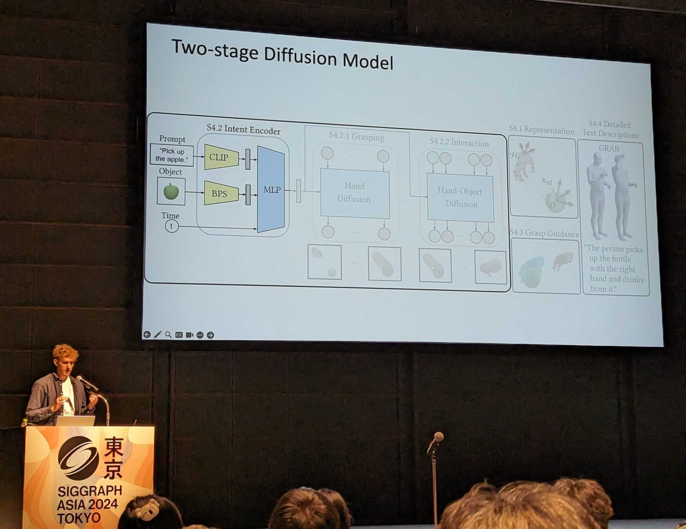

Associate Research Scientist · Disney Research Zurich
Sammy Christen
I am an Associate Research Scientist in the robotics team at Disney Research Zurich. I obtained my PhD at the AIT lab, ETH Zurich, supervised by Professor Otmar Hilliges and co-supervised by Professor Jemin Hwangbo. My research focuses on human–robot interaction and dexterous robotic grasping. During my PhD, I spent time at the NVIDIA AI Robotics Lab in Seattle and at Meta Reality Labs.

News
-
May 2026
Our paper ReActor: Reinforcement Learning for Physics-Aware Motion Retargeting is accepted at SIGGRAPH 2026.
-
Jan 2026
Our paper Robot Crash Course: Learning Soft and Stylized Falling is accepted at ICRA 2026.
-
Oct 2025
Invited talk at the AI+X summit.
-
Aug 2025
Our paper RobustDexGrasp: Robust Dexterous Grasping of General Objects is accepted at CoRL 2025.
-
Jun 2025
Our paper Autonomous Human-Robot Interaction via Operator Imitation is accepted at IROS 2025.
-
Jun 2025
Part of the organizing committee at the GenAI-HRI workshop at RSS 2025.
-
May 2025
Honored as outstanding reviewer at CVPR 2025.
-
Mar 2025
Served as social media chair at 3DV 2025.
-
Oct 2024
Started a new position as Postdoctoral Researcher at Disney Research.
-
Oct 2024
Successfully defended my PhD!
Selected Publications
* indicates equal contribution

Reviewing
- 2025 CoRL, CVPR (outstanding reviewer), ICCV, ICRA, IROS, RA-L, SIGGRAPH Asia
- 2024 CVPR, EAI@CVPR, ECCV, ICRA, IROS, SIGGRAPH, SIGGRAPH Asia, T-RO
- 2023 CVPR, ICCV, ICRA, IROS, RA-L, SIGGRAPH, 3DV, Comput Methods Biomech and Biomed Eng
- 2022 CVPR, ICRA, IROS, RA-L, ECCV (outstanding reviewer), SIGGRAPH Asia, Computers & Graphics
- 2021 IROS, NeurIPS, RA-L
- 2020 CHI, RA-L, ICRA